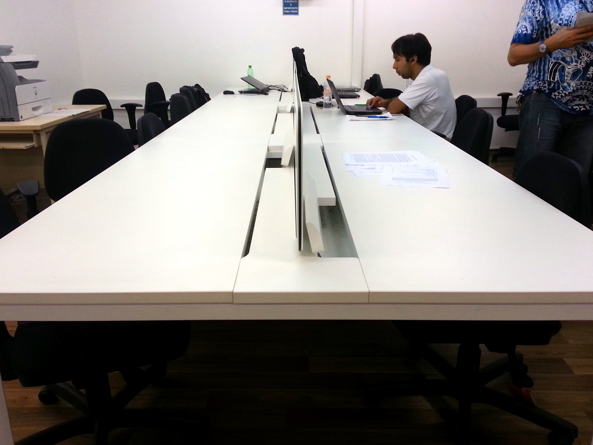

Rede Linux IME-USP
Sejam Bem-vindos, Ingressantes!

Quem somos?
Novos Admins da Rede Linux!
- Amadeu
- André
- Carybé
- Duílio
- Fernanda
- Gustavo
- Rodrigo
- (~amadeush)
- (~adreluizas)
- (~carybe)
- (~duilioelias)
- (~nanda)
- (~gustavocw)
- (~rasouzas)
|
|
|
Sobre a Rede
- Criada com o propósito de ampliar o acesso dos alunos do IME aos recursos de informática
- Laboratórios amplamente frequentados pelos estudantes
- Funciona como local de convívio social, estudos e desenvolvimento de projetos
- E o melhor: criada e administrada por alunos!
Números
- A rede Linux do IME funciona desde 1995;
- Cerca de 50 computadores clientes;
- 3 servidores físicos, além de vários virtuais;
- 2 laboratórios;
- Sala exclusiva para servidores/administração;
- 2 impressoras;
- Em operação 24 horas por dia, 7 dias por semana.
Por que Linux?
- É fácil de usar!
- É de graça!
- É bonito!
- É rápido e leve!
- É ótimo para o aprendizado da computação!
- Tem um mascote só dele!
- É necessário para a maioria das disciplinas de programação.
Recursos da Rede
Áreas de estudo
Computadores com acesso à Internet e armazenamento pessoal

Impressão
(cada aluno tem direito a 75 páginas mensais)

Web server - o usuário pode ter seu próprio site!
Conta de E-mail
Onde fica?

Sala 127-A (primeiro andar)
Super sala de uso geral, com impressoras, mesas de estudo e acessível a todos
Sala 258-A (segundo andar)
Sala exclusiva para alunos do BCC
Sala 125-A (sala dos administradores)
Para quem quiser bater um papo com a gente
Cadastro / Acesso
- Primeiramente, faça o pré-cadastro em nosso site: http://linux.ime.usp.br/?precadastro
- Após isso, basta passar na sala da Administração (125-A), falar conosco e criaremos uma conta para você!
Contato
Para maiores informações visite nosso site!
Criado por Rede Linux / admin@linux.ime.usp.br